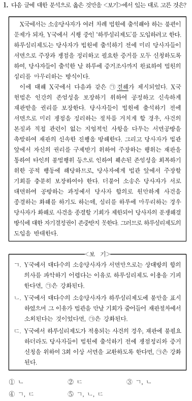
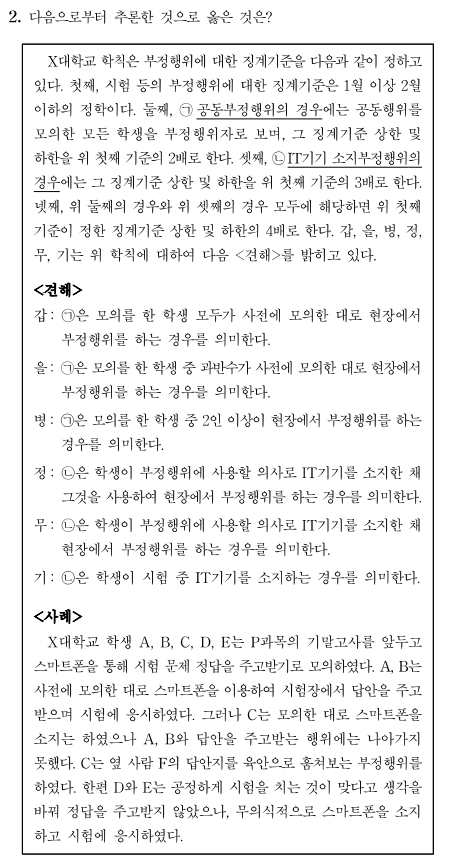
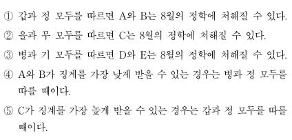

얼마나 어려운 시험이기에 만점이 저렇게 주목받는지 궁금해져서 2027추리논증 기출문제를 봐봤다.



처음 접해보는 일반인은 1,2번 부터 없던 난독증도 생기는 문항
보다시피
주어진 문항들에게서 얻을 수 있는 명징한 전제를 올바르게 정립하고
견해마다 성립조건/사례적용을 해야 풀 수가 있으시겠다.
하지만 읽을 때는 이해한 것 같다가도 선지를 보는 순간 다시 지문으로 돌아가게 된다.
추리논증은 40문항 125분, 단순 계산으로 문제당 약 3분 남짓이다.
그 안에 지문을 읽고, 조건을 정리하고, 선지까지 판단해야 한다.
문제를 해결하는 능력에 더해, 끝까지 조건 하나 놓치지 않는 정확성도 필요하다
내 머리론 도저히 필기없이는 못풀겠다.
저는 2번까지 풀고 창을 닫어버렸더랬죠..
답은 1번 5, 2번 3
나 난독증 있었나. 글 존나 안읽히네 시발